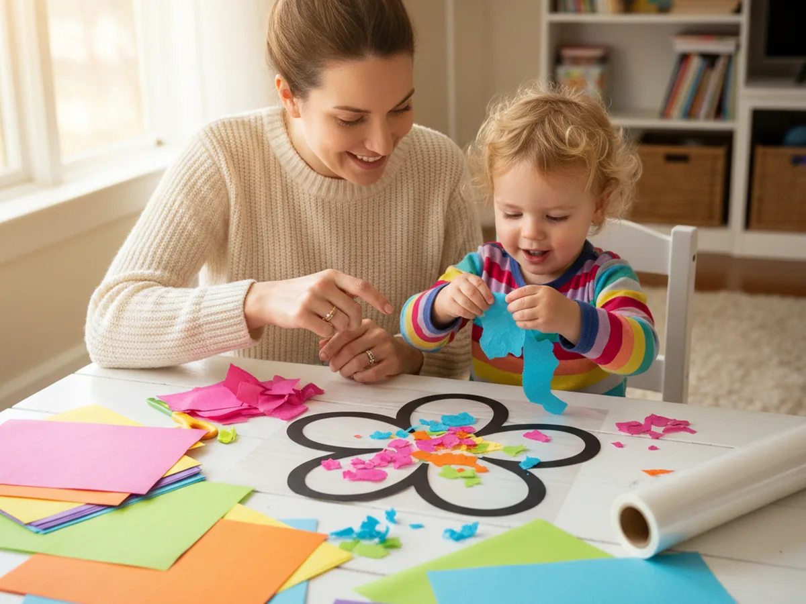
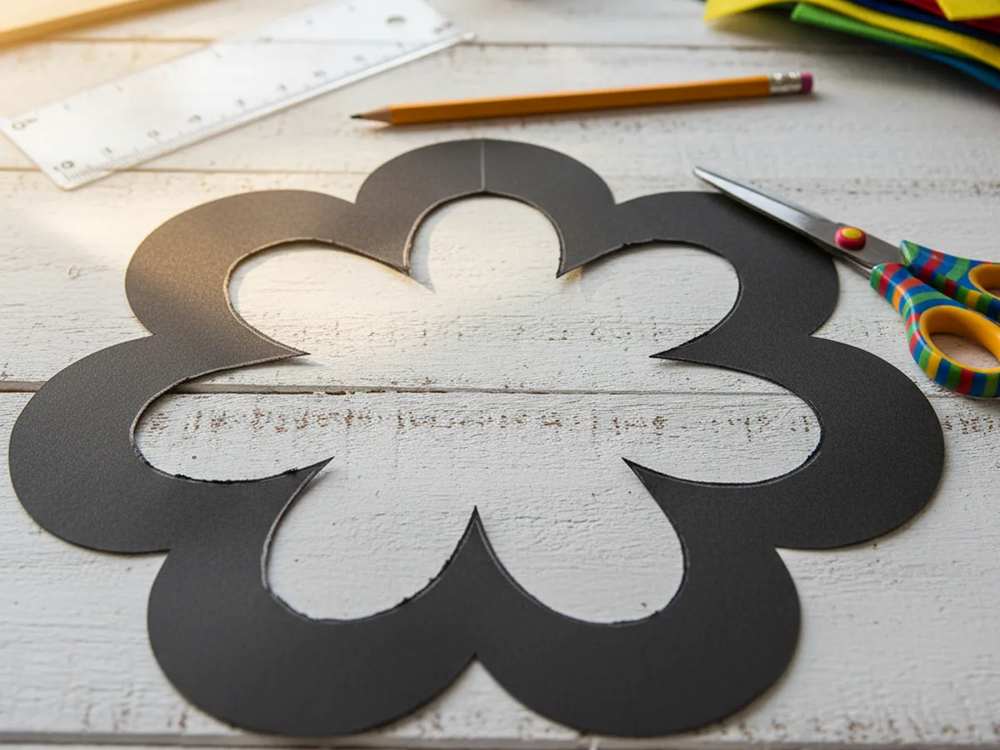
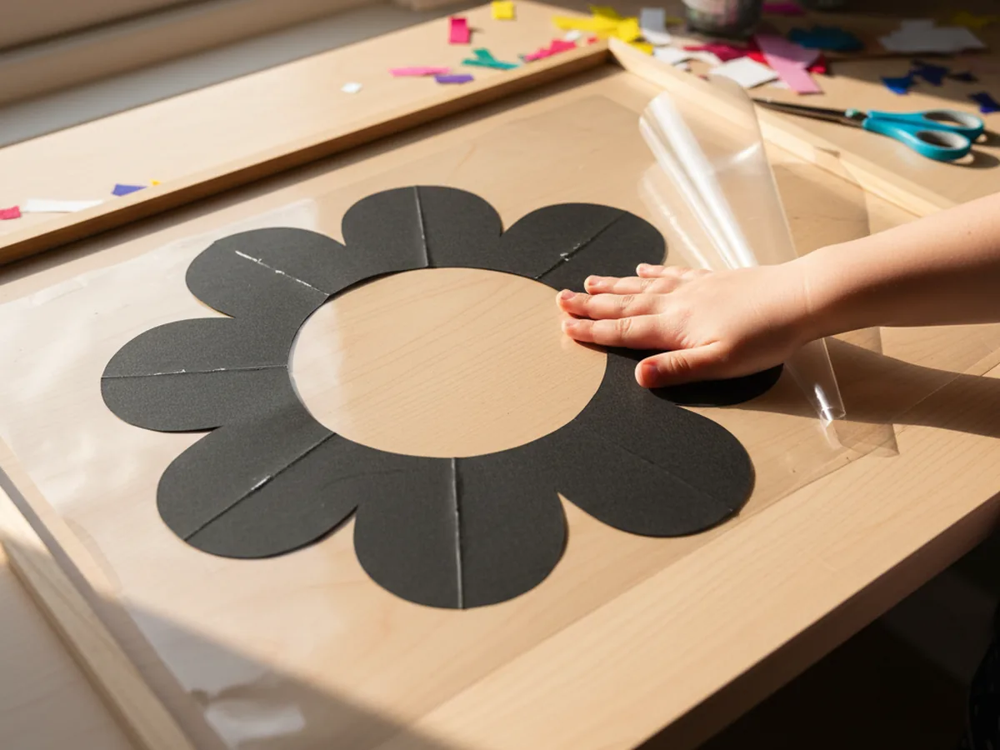
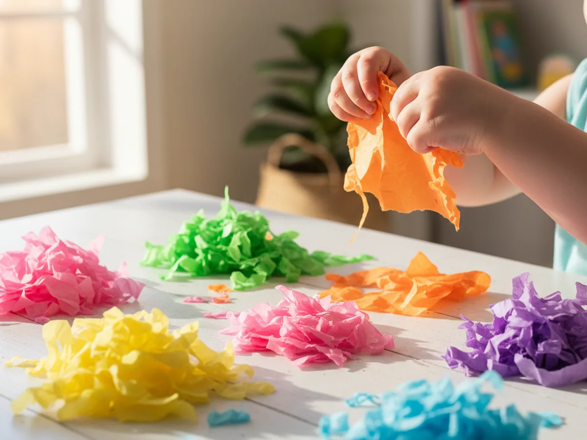
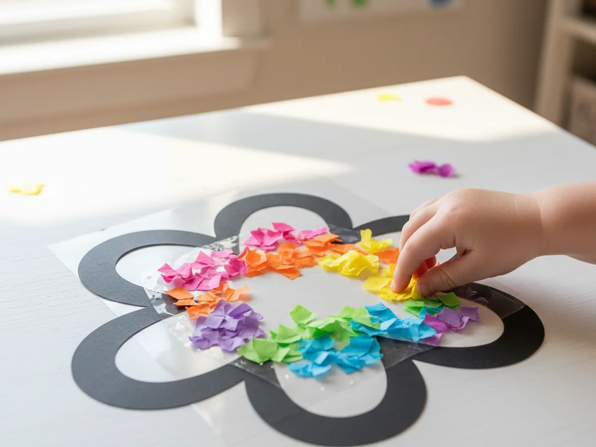
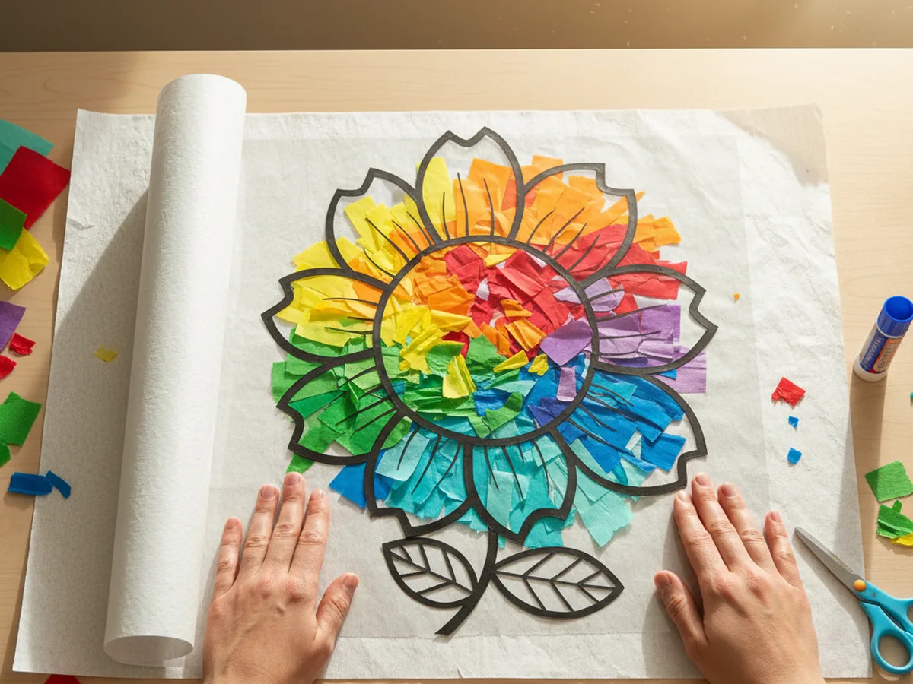
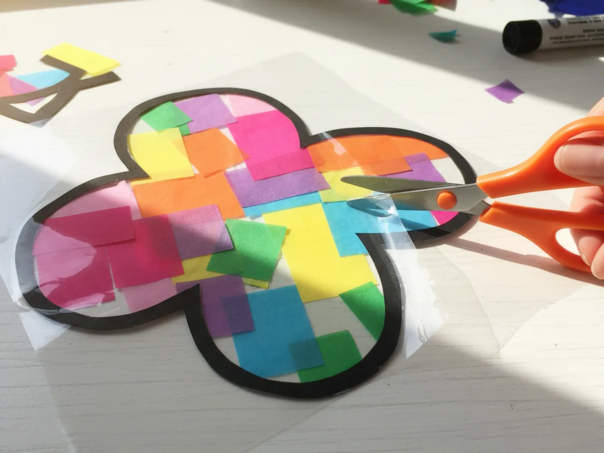
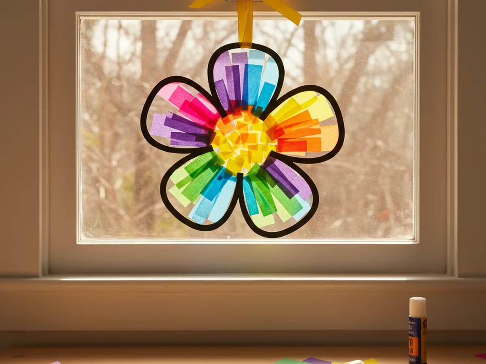

There is something wonderful about a craft that looks impressive but only takes 30 minutes to make. This tissue paper suncatcher craft is exactly that. You press colorful pieces of tissue paper onto a sticky contact paper frame, seal it up, and suddenly you have something glowing and beautiful to hang in the window. When the sun hits it, your little one's creation becomes like a tiny stained glass scene right in your home. ☀️
This project uses no glue, no paint, and very little cleanup, which makes it one of the most beginner-friendly crafts you can do with young children. The result is so pretty that most families end up hanging it in a window for weeks.
Why Kids Love This Craft
The magic of a tissue paper suncatcher craft is in the light. The moment you hang the finished piece in a sunny window and see the colors glow, it feels like something special just appeared in your home. Kids absolutely love that moment, and it makes the whole activity feel genuinely worthwhile.
Beyond the wow factor, this craft is wonderfully hands-on from start to finish. Tearing tissue paper into pieces is deeply satisfying for young children. There is no wrong way to do it, and the act of ripping and pressing gives little hands something real and tactile to do. Kids who might fidget through other activities often find this one surprisingly calming and focused.
From a developmental standpoint, pressing tissue paper pieces onto a sticky surface is excellent fine motor practice. Children also get a natural introduction to color mixing when overlapping pieces blend together to create new shades. The finished result is something they genuinely feel proud to show off, which builds real confidence. Seeing their own artwork light up in a window is a memory worth making.

What You'll Need
Everything you need for this tissue paper suncatcher craft is easy to find, and most of it arrives ready to use straight out of the package.
- Colored tissue paper, in as many colors as you like for a vibrant, cheerful result.
- Clear self-adhesive contact paper, the sticky base that holds all the tissue paper in place.
- Black construction paper, for the frame border that gives the suncatcher its clean finished look.
- Kids scissors, child-safe and easy to grip for cutting the frame.
- Single hole punch, for making a clean hanging hole at the top of the frame.
- String or ribbon, any kind will work for hanging the finished piece.
- A pencil, for tracing the shape onto black construction paper before cutting.
Step-by-Step Instructions
This craft comes together quickly and easily. Follow these steps together and your tissue paper suncatcher will be ready to hang in about 30 minutes.
Step 1: Cut Out Your Suncatcher Frame
Start by drawing a simple shape on your black construction paper. A circle, flower, sun, or heart all work beautifully. Then draw a smaller version of the same shape inside it, leaving about one inch of black border all the way around. Cut out the center of the shape carefully to create the frame opening. This black border is what gives your suncatcher craft its finished, polished look.

Step 2: Attach the First Piece of Contact Paper
Cut a piece of clear contact paper that is a little larger than your frame. Peel off the paper backing and lay the contact paper sticky-side-up on your craft table. Press the black construction paper frame firmly onto the sticky surface, centering it so the open cutout area is surrounded by contact paper on all sides. Press down around the edges of the frame to make sure it is fully adhered.

Step 3: Tear the Tissue Paper Into Pieces
Now comes the part kids truly love. Take your colored tissue paper and tear it into small pieces, roughly one to two inches each. You do not need to cut them precisely. Torn edges actually look more beautiful in the finished suncatcher because the overlapping layers create soft color gradients. Keep a pile of each color handy so your child can reach for whatever they like as they fill the frame.

Step 4: Fill the Frame with Color
Press tissue paper pieces one by one onto the sticky contact paper inside the frame opening. Encourage your child to overlap the pieces and layer different colors on top of each other. Where colors overlap, they will blend into new shades, which adds real depth and interest to the finished piece. Keep pressing until every bit of the opening is filled. This is the heart of the entire project and usually the step where kids become completely absorbed. 🌈

Step 5: Seal with the Second Contact Paper Sheet
Cut a second piece of clear contact paper the same size as the first. Peel off its backing and carefully press it sticky-side-down over the tissue paper, sandwiching everything between the two layers. Start from one edge and smooth it across slowly to avoid air bubbles. Press firmly around all the edges to make sure the seal is complete. The tissue paper pieces are now safely locked in place and will stay that way for a long time.

Step 6: Trim Around the Edges
Use scissors to trim neatly around the outside edge of the black paper frame, cutting away the extra contact paper that extends beyond the border. Work slowly and follow the shape of the frame as closely as you can. After trimming, run your fingers along all the edges to make sure both layers of contact paper are pressed firmly together with no loose bits. Your tissue paper suncatcher is almost done.

Step 7: Punch a Hole and Hang It Up
Use your hole punch to make a small hole near the top center of the black frame. Thread a piece of string or ribbon through the hole and tie a secure knot. Now take your finished tissue paper suncatcher craft to your sunniest window and hang it up. Step back and watch the colors glow. This is the moment that makes the whole project completely worthwhile. 🎨

Variations to Try
Seasonal Shape Suncatchers: Change the frame shape to match whatever time of year it is. A heart shape is perfect for Valentine's Day, a pumpkin or leaf for fall, a snowflake for winter, or a simple egg for Easter. Use the same tissue paper filling technique with whatever colors suit the season. The project stays exactly the same but feels fresh every time.
Rainbow Gradient Suncatcher: Instead of mixing colors freely, arrange the tissue paper pieces in rainbow order from one side to the other. Start with red, move through orange, yellow, green, and end with blue or purple. The result is a soft, glowing rainbow that looks especially magical in a window on a bright morning.
Tissue Paper Suncatcher Card: Make a small version using a card-sized piece of black paper with a simple heart or star cut out of the center. Sandwich it with small pieces of contact paper and tissue paper, trim it down, and you have a handmade window card that looks gorgeous displayed on a windowsill or gifted to a grandparent.
Final Thoughts
A tissue paper suncatcher craft is one of those projects you will want to come back to again and again. It is fast enough to hold a young child's full attention, hands-on enough to feel genuinely creative, and the result is beautiful in a way that most families love having on display for weeks.
What makes this craft especially worthwhile is the moment after it goes up in the window. Your child sees their own work lit up by sunlight, and that feeling of pride is something no screen can replicate. Enjoy every torn piece of tissue paper and every sticky press. You are making something real together.
More Crafts You'll Love
If your child loved working with tissue paper today, these next projects are a perfect follow-up.